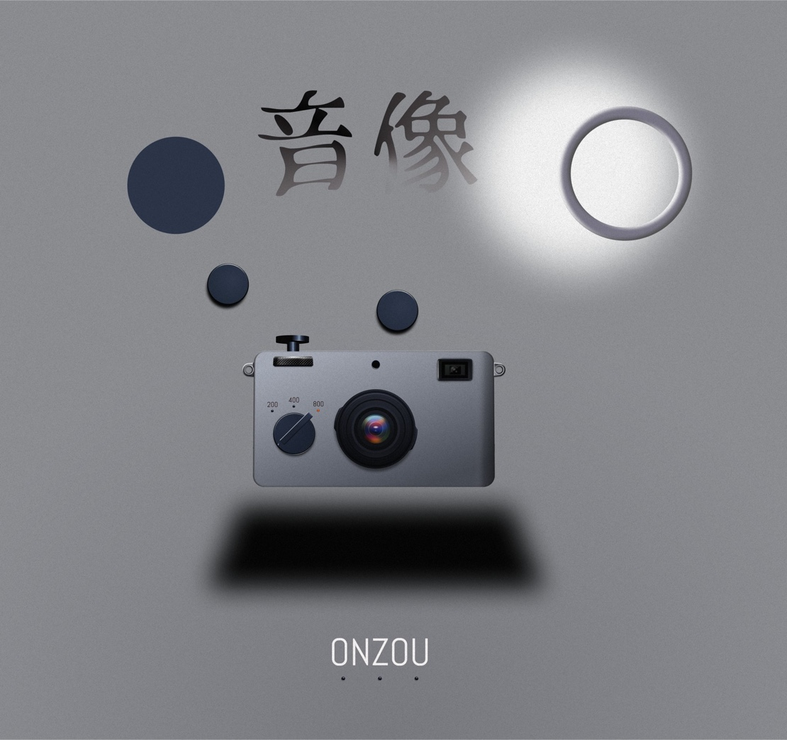
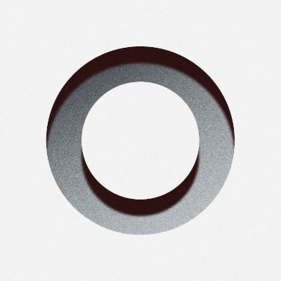
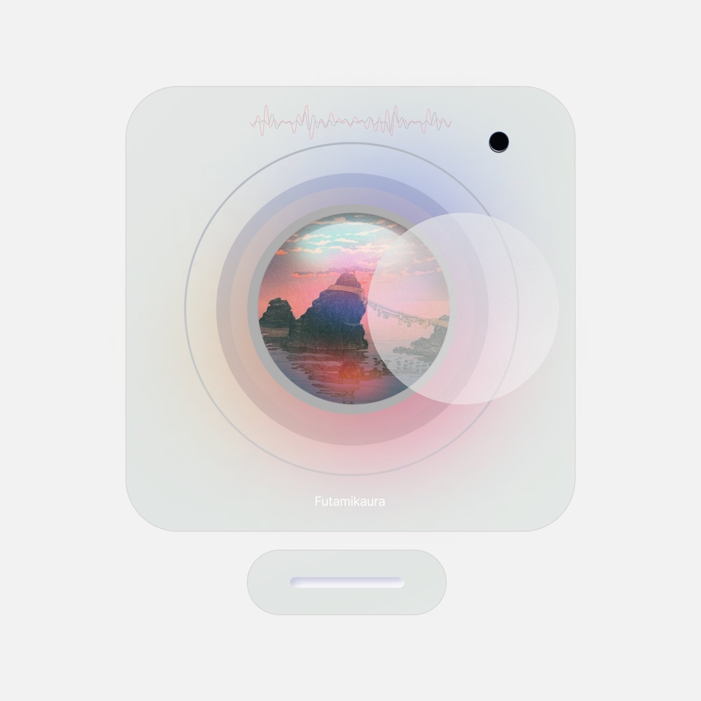
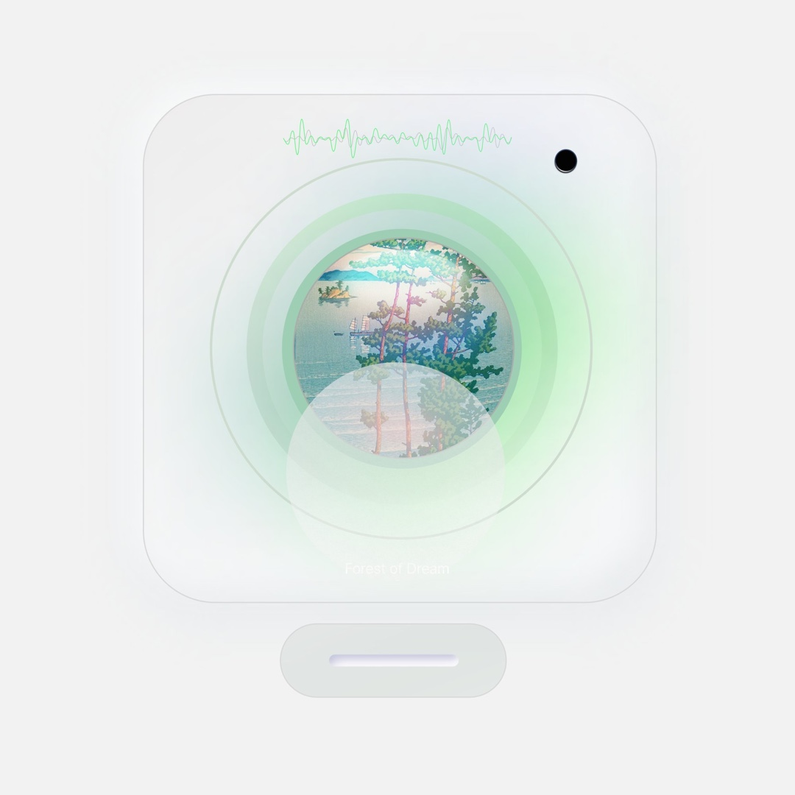

CONCEPT GRAPHIC — 01
音と像が溶け合う、アートワークの探求

— Overview
「音像」——音に、形を与える。
「音像（ONZOU）」は、音楽と映像・グラフィックの境界を探るコンセプトシリーズ。CDプレイヤーを模したビジュアルフレームの中に風景・波形・光を内包させ、音楽を「見る」体験を設計した。リングモチーフから始まる視覚言語が、Futamikaura・Forest of Dreamへと展開する。
— Visual System



— 01 コンセプト
音楽は本来、目に見えない。しかし人は音楽を聴くとき、必ず何かを「見て」いる。風景、記憶、感情——それらを視覚的に定着させることが「音像」の出発点だ。リングという原初的な形は、音の振動・時間の循環・レコードの円盤を同時に表象する。
音に形を与えることは、
記憶に輪郭を与えることだ。
リングモチーフ——音の振動・レコード・時間の循環を一形態で表現
CDプレイヤー型フレーム——音楽再生装置を視覚的メタファーとして使用
浮世絵×現代——Futamikaura・Forest of Dreamに日本の古典美を内包
— 02 設計
シリーズを貫く視覚文法として「円・光・波形」を定義。グレートーンの空間にカメラ・ドット・漢字を浮遊させた「音像」メインビジュアルから、CDプレイヤーのフォルムを借りたアートワーク群へ展開する。波形の色（ピンク/グリーン）が楽曲のトーンを決定する。
① 基礎形態
リングと円
すべての視覚要素の起点。音・時間・宇宙の循環を円環として定着させる。
② メインビジュアル
音像 — グレー空間
カメラ・ドット・漢字が無重力に浮遊。音と像が「溶け合う前」の状態を表現。
③ Futamikaura
ピンク×夫婦岩
伊勢の夫婦岩を浮世絵タッチで内包。ピンクの波形が音の柔らかさを表す。
④ Forest of Dream
グリーン×松林
琵琶湖を想起させる松林の風景。グリーンの波形が自然との共鳴を示す。
⑤ フレーム設計
CDプレイヤーの形
再生装置そのものをアートワークフレームに転用。音楽と視覚の統合を形式として体現。
— 核心
音が形になる瞬間
グラフィックが完成した瞬間、音楽を聴かなくても「音が聴こえる」状態を目指した。
— 03 成果
ONZOUシリーズは、音楽のビジュアル表現としてだけでなく、Kinoshita Studioが持つ「音と空間のデザイン」という独自性を示す作品群となった。電子音楽プロデューサー99LETTERSとしての音楽的背景と、デザイナーとしての視覚的思考が融合した地点に生まれたシリーズ。
音楽・グラフィック・映像のクロスオーバー表現を確立
日本の古典美と現代的フォルムの統合による独自の視覚言語
シリーズとして展開可能なビジュアルシステムの構築